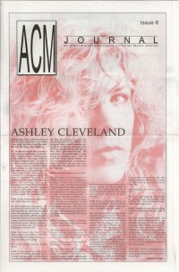

Ashley ClevelandOn the cover
1991
ACM Journal | Media coverage:- Apr 1990 in CCM "In Concert: The Cannery, Nashville, TN", by Brian Mansfield
- Apr 1991 in CCM "In The News: Headed For The Big Town", by Kathleen A Ervin
- 1991 in ACM Journal "Interview: Ashley Cleveland"
- Nov 1991 in Harvest Rock Syndicate "A Big Voice for the Big Town", by Brian Mansfield
- 1992 in Cornerstone "Interview: Ashley Cleveland", by David Canfield
- Jul 1992 in Syndicate "Cornerstone Concert Reviews: Side-Stage, Thursday, July 2, 1992", by Brett Kratzer
- Nov 1992 in Notebored "On Stage: Ashley Cleveland, Pierce Pettis, Don Henry", by Erik Arneson
- Mar 1993 in CCM "In Concert: Mark Heard Memorial Benefit Concert: Massey Auditorium, Belmont University, Nashville, TN", by Bruce A. Brown
- Nov 1993 in Campus Life "Just The Facts: Ashley Cleveland", by Michael Long
- Nov 1993 in Campus Life "Expressions: Ashley Cleveland", by Jim Long
- Jan 1994 in CCM "In The Shadow of Success", by Brian Quincy Newcomb
- Aug 1995 in CCM "Hello Cleveland", by Holly Halverson
- Sep 1995 in CCM "In Concert: The Ace of Clubs, Nashville, TN", by Derek Wesley Selby
- Dec 1995 in CCM "In Concert: New Life Church, Colorado Springs, CO", by Todd Hafer
- Mar 1996 in Campus Life "Tell Me About It: Ashley Cleveland", by Chris Lutes
- Apr 1996 in Religious Broadcasting "Touring... With Children", by Lesa Helton
- Jul 1996 in CCM "The Other Side of the Tracks"
- Dec 1998 in CCM "Backstage: Ashley Cleveland: Live From Cleveland", by Liz Kelly
- Apr 1999 in CCM "On The Beat: Women Triumph at Grammys"
- Feb 2000 in CCM "On The Beat: Label Shut-Down Leaves Artists In Limbo", by Joan Brasher
- May 2000 in CCM "Ready to Roar: Lessons For Lambs", by Melissa Riddle
- Sep 2003 in CCM "Last Glance: Ashley Cleveland", by Kevin Sparkman
- Mar 2005 in CCM "All Things Bright and Beautiful", by Gregory J. Rumburg
- Jul 2005 in Christian Single "Real Life: Hope Sings A Song", by Deonne Beron
- Sep 2005 in Worship Leader "Table Talk: Common Ground", by Julie Reid
- Apr 2009 in Sojourners "Nashville's New Groove"
- Sep 2013 in CCM Digital "In [His/Her] Own Words: Ashley Cleveland", by Ashley Cleveland
- Oct 2013 in CCM Digital "In [His/Her] Own Words: Ashley Cleveland"
- 15 Sep 2017 in CCM Digital "Sharing Our Scars", by Andrew Greer
Albums & reviews:2006: Before the Daylight's Shot
2009: God Don't Never Change
Award Summary (Nominations / Wins)
Dove Awards1996 Dove Awards- Recorded Music Packaging: Lesson of Love
Grammy Awards1998 Grammy Awards- Best Rock Gospel Album: You Are There
2007 Grammy Awards2009 Grammy Awards- Best Traditional Gospel Album: God Don't Never Change
Books about Ashley Cleveland
- "Ashley Cleveland" in The Encyclopedia of Contemporary Christian Music (Mark Allan Powell, 2002).
- "Ashley Cleveland" in The Billboard Guide to Contemporary Christian Music (Barry Alfonso, 2002).
Published articles:1 article credited in CCM: 2002.1 article credited in CCM Digital: 2013. |